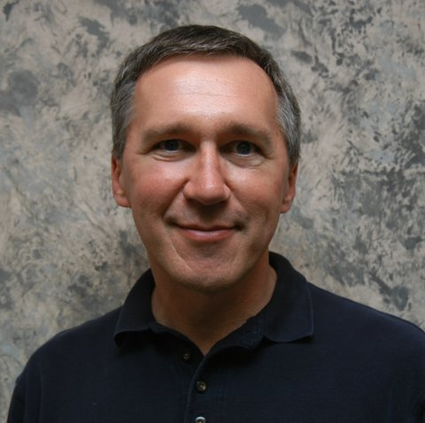

| |
     |
                                          |
The Digital Symposium Collection is pleased to present videos of the SIGMOD 2005 Keynote Addresses. Click on either the speaker's photo or the talk's title to display the video clip.
With yearly doubling of storage, research aimed at personal storage systems is increasing. Examples include Haystack, LifeStreams, and the Remembrance Agent. At Microsoft Research, Stuff I've Seen, Sapphire, and MyLifeBits have tackled the problem. In October of 2004, the First ACM Workshop on Continuous Archival and Retrieval of Personal Experiences sold out and generated strong enthusiasm, opening up new areas of research. Since the project began, the number and richness of new data types continues to increase. Challenges include acquisition of more real-time streams coming from ever-expanding "personal environments", never-ending creation of schema and meta-data, privacy, and long term preservation, to name a few. Bio: Gordon Bell is a senior researcher in Microsoft's Bay Area Research Center (BARC), San Francisco, CA. He has an SB and SM degree from MIT (1956-57) and honorary D. Eng. from WPI (1993). He spent 23 years (1960-1983) at Digital Equipment Corporation as Vice President of Research and Development, where he was the architect of numerous mini- and time-sharing computers, led the development of the VAX, and pioneered several multiprocessor designs. During 1966-72 he was Professor of Computer Science and Electrical Engineering at Carnegie-Mellon University. In 1986-1987 he was the first Assistant Director of the National Science Foundation's Computing Directorate. He led the National Research and Education Network (NREN) panel that became the NII/GII, and was an author of the first High Performance Computer and Communications Initiative. Beginning in 1987 he sponsored "The Gordon Bell Prize" for Parallelism, awarded at the annual ACM/IEEE Conference on Supercomputing. Bell is a member of the American Academy of Arts and Sciences (Fellow), American Association for the Advancement of Science (Fellow), ACM (Fellow), IEEE (Fellow and Computer Pioneer), and the National Academy of Engineering. His awards include: the IEEE Von Neumann Medal, the AEA Inventor Award for the greatest economic contribution to the New England region, the IEEE 2001 Vladamir Karapetoff Eminent Member's Award of Eta Kappa Nu, and The 1991 National Medal of Technology. Keynote Speaker Tom Mitchell, Carnegie-Mellon University:Computer Workstations as Intelligent Agents Abstract: Personal workstations have become the primary information repository for many people, in both their professional and personal lives. Despite the centrality of this information repository in our lives, it remains strangely disorganized and unstructured. We consider how this situation is likely to change over the next five years, due to the confluence of several developments including desktop search engines, automated text analysis, and machine learning. We draw on examples from two ongoing research efforts (the CALO and RADAR projects) to build persistent, personalized learning agents that attempt to interpret and organize workstation information, and to act as personal assistants to workstation users. Bio: Tom M. Mitchell is the Fredkin Professor of Computer Science at Carnegie Mellon University. His research lies in the areas of machine learning, artificial intelligence, and cognitive neuroscience. Mitchell is author of the textbook "Machine Learning," Past President of the American Association of Artificial Intelligence (AAAI), and a member of the US National Research Council's Computer Science and Telecommunications Board. In 2002 he received the Debye Prize from the Edmund Hustinx Foundation for his research in computer science. Mitchell is the founding director of CMU's Center for Automated Learning and Discovery, a department within CMU's School of Computer Science that offers the world's first Ph.D. program on "Computational and Statistical Learning." Mitchell's recent research has focused on machine learning approaches to analyzing human brain function based on fMRI data, and on machine learning for intelligent personal assistants.©2006 Association for Computing Machinery |